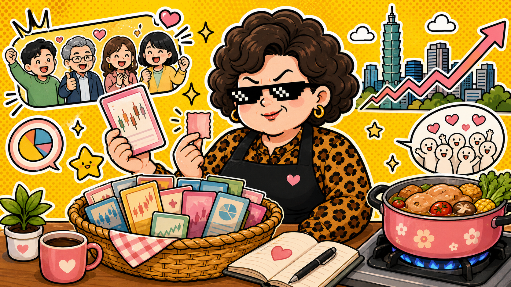

0050 元大台灣50 · 市值型 ETF
門票變小，心臟照跳
0050 拆分後更容易被小資族拿來討論，受益人數也重新站上百萬級，但它本質還是台灣大型股大籃子。
上圖為 AI 生成情境圖，不是新聞照片，也不是投資建議。
資料整理：2026/05/25
阿姨白話：0050 像把台灣前段班公司裝成一個便當。便當變小份比較好入手，但裡面的菜還是會跟市場天氣一起冷熱。
TechNews 報導指出，0050 拆分後價格門檻下降，受益人數連續數週增加並突破百萬。這種現象很適合拿來看散戶行為：當「一張看起來比較不貴」時，願意開始研究的人自然變多。
不過，門檻下降不等於風險消失。0050 追蹤的是台灣大型權值股組合，台股漲它通常受惠，台股大震它也會晃。它不是許願池，也不是「買了就忘記自己有買」的存錢筒。
阿姨看點
- 拆分讓單位價格更親民，但總報酬仍取決於成分股表現。
- 大型權值股集中度高，台積電與電子權值的影響不能忽略。
- 適合拿來學大盤邏輯，不適合拿來幻想每天領便當錢。
阿姨警示
不是買賣建議
這篇只整理公開新聞與 ETF 基本概念。ETF 仍有市場風險、追蹤誤差、費用與成分股集中風險，請自行判斷是否適合自己的資金與時間規畫。